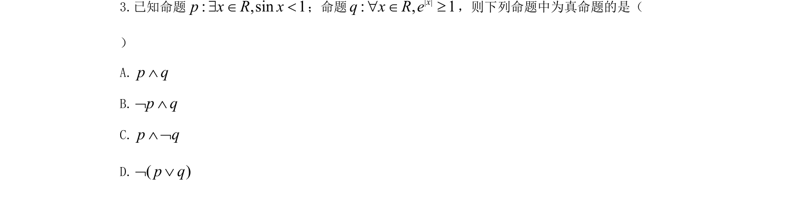
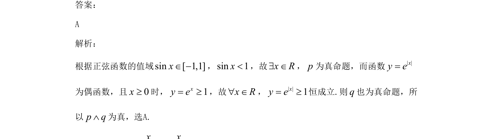

考点：命题真假判断 正弦函数值域 指数函数性质 逻辑联结词

本题考查正弦函数值域和指数函数性质在命题真假判断中的应用。

📄 原 PDF 第 2 页：
素材/真题/吉林/2008-2024·（吉林）数学高考真题/2021年高考数学试卷（文）（全国乙卷）（新课标Ⅰ）（解析卷）.pdf
3.已知命题: ,sin 1p x R x$ Î <；命题 | |: , 1xq x R eÎ"³，则下列命题中为真命题的是（
）
A.p qÙ
B.p qØ Ù
C.p qÙ Ø
D.( )p qØÚ
答案：
A
解析：
根据正弦函数的值域sin[1,1]xÎ-，sin 1x<，故x R$ Î，p为真命题，而函数| |xy e=
为偶函数，且0x³时，1xy e= ³，故x R" Î，| |1xy e= ³恒成立.则q也为真命题，所
以p qÙ为真，选A.